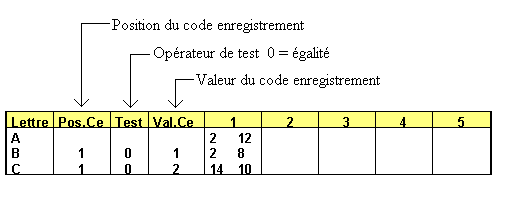

Les fichiers séquentiels-indexés sont les fichiers les plus utilisés lors du développement d'applications de gestion.
Un fichier séquentiel-indexé est en réalité composé de deux fichiers :
un fichier paramètres et clés (type I),
un fichier de données (généralement de type N, mais qui peut, avec certaines restrictions, être aussi de type C ou U).
Grâce à la technique du séquentiel-indexé multi-clés d'Harmony, le même fichier de données peut être vu comme s'il était trié suivant plusieurs ordres différents. On pourra par exemple lire un fichier des factures dans l'ordre des numéros de clients, des dates de factures ou des numéros de facture.
Les fichiers séquentiel-indexés d'Harmony sont particulièrement performants. Il n'y a pas de clé primaire et des clés secondaires. Les temps d'accès sont indépendants de la clé utilisée ainsi que du nombre d'enregistrements contenus dans le fichier. De plus, il n'est jamais nécessaire de réorganiser les clés pour améliorer les performances, quelles que soient les opérations effectuées.
Remarques :
La décomposition des fichiers séquentiels-indexés en deux fichiers distincts est transparente pour le programmeur. Celui-ci devra toujours préciser le nom du fichier paramètres et clés pour accéder à un fichier de type I.
Les clés sont automatiquement mises à jour en temps réel à chaque écriture, modification ou suppression d'un enregistrement.
I. FICHIERS SEQUENTIELS-INDEXES ETENDUS
A partir de la version 6, tous les fichiers séquentiels-indexés sont en mode "étendu".
Les fichiers séquentiels-indexés étendus bénéficient des avantages suivants :
La nombre de clés est de 253.
La taille des clés peut atteindre 240 caractères.
Une clé peut être composée de 16 segments de l'enregistrement).
La taille du fichier des données peut passer la frontière des 4 Go.
II. LES PARAMETRES
Les paramètres d'un fichier séquentiel-indexé se composent :
du nom du fichier des données associé aux clés,
de la description des clés (nom, type, données qui composent chaque clé).
Le nom du fichier des données
Généralement, le nom du fichier des données n'est pas précisé. Dans ce cas, il est déduit du nom du fichier I en remplaçant l'extension .dhfi en .dhfd.
Si le nom du fichier des données est précisé, il l'est généralement sans préciser de chemin complet. Dans ce cas, le fichier des données est tout d'abord cherché dans le même répertoire que le fichier des clés. Si le fichier des données n'est pas trouvé dans ce répertoire, il est recherché dans la liste des chemins implicites.
Si le nom du fichier des données est un nom avec un chemin complet, la recherche se fait exclusivement d'après ce nom.
Il est déconseillé de procéder ainsi, car en cas de déplacement du fichier des données, il faut penser à modifier son nom dans les paramètres.
Si le nom des clés n'a pas l'extension dhfi et que le nom du fichier des données est a espaces, le nom du fichier des données a même extension mais avec la lettre d avant le point.
Ex : fichier.tmp --> fichierd.tmp
Description des clés
A. Définition
Une clé définit un ordre de tri du fichier des données. Elle est identifiée par une valeur binaire appelée "lettre clé". L'ordre de tri est toujours croissant mais une fonction (Fpread) permet de lire les clés suivant l'ordre inverse.
Il est possible de définir 253 clés. Les seules valeurs interdites sont $00 $20 $FF.
Clés nommées :
Lorsqu'un index est ajouté au fichier, deux possibilités se présentent pour le définir :
Une lettre clé est affectée à l'index.
Un nom est affecté à l'index. Dans ce cas, Harmony attribue dynamiquement une lettre clé à l'index au moment de la création (modification) du fichier physique.
Terminologie
Un index est dit nommé si un nom lui est affecté.
Remarques
L'utilisation des noms d'index est conseillée pour le développement des ''add-on". Par exemple, plusieurs sociétés peuvent développer un Add-on sur Divalto et chacune a besoin d'ajouter de nouveaux index aux fichiers. Pour éviter tout conflit dans le choix des "lettre clés", les index seront définis par un nom. L'unicité de ce nom sera assurée en préfixant le nom par les initiales de l'entreprise.
Les "lettre clés" supérieures à 122 ('z') sont réservées pour les index nommés.
Si un index n'est pas nommé, le système lui attribue automatiquement un nom, ce nom étant la lettre clé.
Les fonctions Iread IWrite etc. permettent d'accéder au fichier en fonction du nom de l'index.
La fonction GetKeyByName permet de connaître la lettre clé d'un index en fonction de son nom.
Clés homonymes :
Le séquentiel-indexé d'Harmony autorise les clés homonymes (identiques). Il n'y a donc pas de notion de clé unique. A la lecture, les homonymes sont lus dans l'ordre chronologique dans lequel ils ont été écrits.
Exemple :
Soit un fichier d'adresses avec une clé sur le nom. Les enregistrements ont été écrits dans l'ordre chronologique suivant :
DUPONT JEAN
DUPONT MICHEL
DUPONT NICOLE
Lors de la recherche d'un enregistrement dont le nom correspond à DUPONT, c'est le premier enregistrement (JEAN) qui est lu. Par des lectures successives, les enregistrement MICHEL et NICOLE sont lus.
Clés à espaces :
Le séquentiel-indexé ne traite pas les clés garnies avec des espaces. Une telle clé n'est jamais générée lors de l'écriture, et il est donc impossible de relire un enregistrement par une clé à espaces.
Exemple :
Prenons l'exemple d'un fichier d'abonnés dont la structure est la suivante :
Nom 20
Prénom 20
Adresse 40
CodePostal 5
Ville 20
Nous voulons pouvoir éditer ce fichier dans les ordres suivants :
- par nom et prénom
- par code postal
- par ville.
On définira pour cela les 3 clés suivantes :
|
Lettre Clé |
Données qui composent la clé |
|
A |
Nom + Prénom |
|
B |
CodePostal |
|
C |
Ville |
Une lecture séquentielle du fichier suivant la clé A délivre les enregistrements triés suivant le nom et le prénom. Une lecture séquentielle sur la clé B délivre les enregistrements triés par code postal, et ainsi de suite.
B. Composition d'une clé
Une clé est exclusivement composée de données contenues dans l'enregistrement. Elle peut atteindre au maximum 240 caractères.
Une clé est composée de une à 16 zones de l'enregistrement qui seront concaténées pour créer la clé.
Une zone est définie par sa position par rapport au début de l'enregistrement (à partir de la position 1) et par sa taille.
Exemple :
Voici la définition des clés du fichier des abonnés :
Comme les zones Nom et Prénom sont contiguës, il est possible de simplifier la définition de la clé A en remplaçant les colonnes 1 et 2 par une seule colonne contenant 1 et 40.
C. Clés conditionnelles
Dans le cas du fichier des abonnés précédemment utilisé, toutes les clés sont systématiquement générées lors de l'écriture d'un enregistrement. Les clés sont alors dites "inconditionnelles".
Mais dans certains cas, il est souhaitable de ne générer que certaines clés, en fonction du contenu de l'enregistrement.
Les clés qui ne sont pas générées pour tous les enregistrements sont dites "clés conditionnelles".
Pour exprimer la condition de génération d'une clé, il faut préciser :
la position d'un caractère particulier de l'enregistrement (appelé code-enregistrement);
un opérateur;
une constante (appelée "Valeur du code enregistrement").
Si l'expression <code_enregistrement opérateur constante> est vraie, la clé est générée.
L'opérateur peut prendre les valeurs suivantes :
|
Valeur |
Signification |
|
0 |
= égal |
|
1 |
<> différent |
|
2 |
< inférieur |
|
3 |
> supérieur |
|
4 |
<= inférieur ou égal |
|
5 |
>= supérieur ou égal |
|
6 |
& et logique |
Voyons sur deux cas l'intérêt des clés conditionnelles.
Cas 1 : Fichier contenant plusieurs types d'enregistrements
Soit un fichier facture contenant les deux types d'enregistrement suivants :
|
Enregistrement entête |
|
|
Champ |
Type |
|
CodeEnregistrement |
1 |
|
NuméroFacture |
8,0 |
|
Ligne |
4,0 |
|
CodeClient |
10 |
|
Total |
14,2 |
|
ModeReglement |
1,0 |
|
Date |
8 |
|
Enregistrement détail |
|
|
Champ |
Type |
|
CodeEnregistrement |
1 |
|
NuméroFacture |
8,0 |
|
Ligne |
4,0 |
|
CodeArticle |
10 |
|
Prix |
8,2 |
|
Quantité |
8,2 |
|
Montant |
10,2 |
Le champ CodeEnregistrement nous permet de distinguer un enregistrement d'entête d'un enregistrement de ligne détail.
La valeur du champ CodeEnregistrement est par exemple :
- 1 pour les enregistrements d'entête,
- 2 pour les enregistrements de détail.
Nous voulons définir les accès nous permettant de lire :
a) tous les enregistrements (entêtes et détails) triés par numéro et ligne de facture
b) uniquement les entêtes triées par numéro de facture.
c) uniquement les lignes détail triées par code article.
Pour réaliser l'accès a), on définit une clé inconditionnelle sur le numéro et la ligne de facture.
Pour réaliser l'accès b), il faut définir une clé conditionnelle sur le numéro de facture qui ne soit générée que sur les enregistrements d'entête (Code Enregistrement = 1).
Pour réaliser l'accès c), il faut définir une clé conditionnelle sur le code article qui ne soit générée que pour les enregistrements de détail (Code Enregistrement = 2).
Voici le paramétrage :

Cas 2 : optimisation des traitements
Voyons sur un exemple comment les clés conditionnelles permettent d'optimiser les traitements sur les fichiers surtout quand ils deviennent volumineux.
Reprenons notre fichier d'abonnés précédemment défini :
Nom 20
Prénom 20
Adresse 40
CodePostal 5
Ville 20
Nous voulons programmer une sélection manuelle dans ce fichier, un pointage de certains enregistrements. Si nous voulons afficher rapidement la liste des enregistrements sélectionnés (qui peut représenter 1 enregistrement sur 10000), il est hors de question de balayer tout le fichier.
Pour résoudre simplement ce problème nous devons :
- ajouter une donnée à l'enregistrement qui indique si l'enregistrement est sélectionné,
- ajouter une clé conditionnelle qui ne sera générée que si l'enregistrement est sélectionné.
Voici la nouvelle description des données et la liste des clés :
Nom 20
Prénom 20
Adresse 40
CodePostal 5
Ville 20
Selection 1
La nouvelle clé D est conditionnelle sur la donnée Sélection. L'ordre est le même que pour la clé A, à savoir sur le nom et le prénom.
III. OPERATIONS POSSIBLES SUR UN FICHIER DE TYPE I
|
Fonctions de gestion des fichiers de type I |
|||
|---|---|---|---|
|
Fonction utilisant les index nommés |
Fonction évoluée |
Fonction de base |
Opération réalisée |
|
ouverture du fichier |
|||
|
fermeture du fichier |
|||
|
fermeture partielle |
|||
|
effacement des clés & des données |
|||
|
lecture séquentielle |
|||
|
lecture séquentielle du précédent |
|||
|
lecture en accès direct |
|||
|
écriture |
|||
|
réécriture du dernier enreg. lu (données de type N seulement) |
|||
|
suppression du dernier enreg. lu (données de type N seulement) |
|||
|
positionnement d'un filtre de recherche |
|||
|
création d'un fichier I |
|||
|
suppression d'un fichier |
|||
|
lecture du paramétrage |
|||
|
modification du paramétrage |
|||
|
libération d'un ticket |
|||
|
libération de tous les enreg. |
|||
|
Sauvegarde de la clé courante et du nom de l'index courant |
|||
|
Restauration de la clé et du nom de l'index. |
|||
Remarque : Lors de la suppression d'un enregistrement (fonction fdelete) l'enregistrement est mis à espaces dans le fichier des données. L'emplacement occupé par l'enregistrement supprimé n'est pas récupéré par le système. Pour récupérer les emplacements supprimés, il faut utiliser périodiquement l'utilitaire xreof.
Voir la déclaration des fichiers par les instructions HFile et HTmpFile qui ouvrent automatiquement les fichiers.